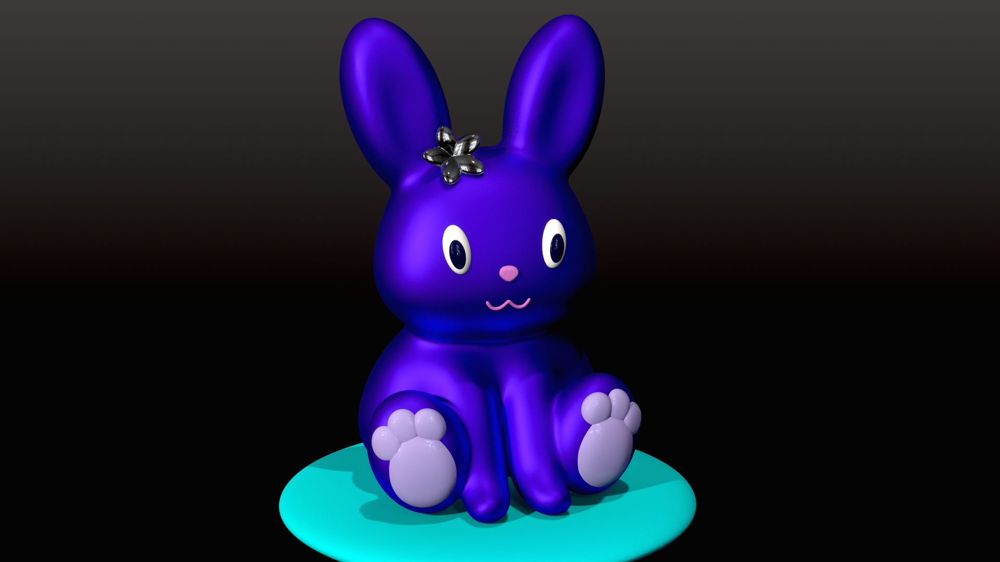
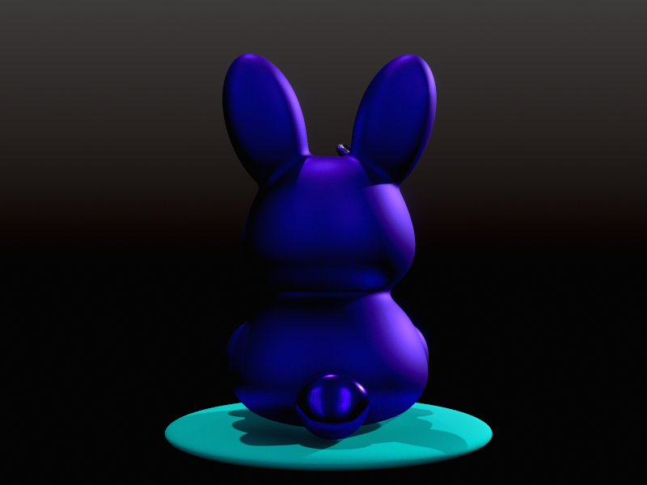
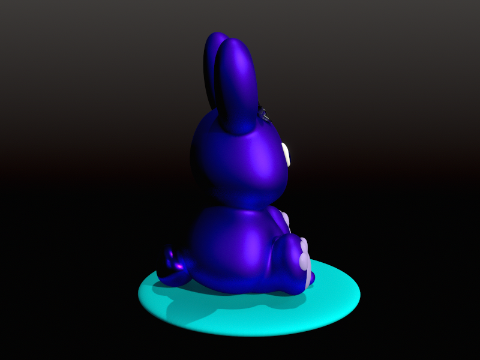
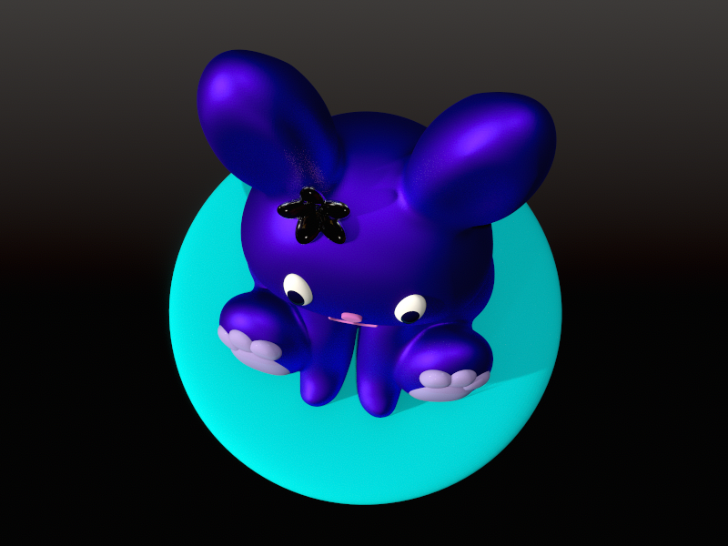

← Work & Projects
Stylized Bunny
2026

This project was an introduction to sculpting in Nomad Sculpt, using a shape-based workflow: blocking out broad forms first, then refining and combining primitives until the character takes shape. The result is a stylized bunny built around simple, readable silhouettes.
The personal creative choice was to push the finish in a bold direction: saturated colours and shiny materials that give the piece a clean, modern quality, closer to a designer toy than a naturalistic sculpt. It was an early lesson in how material choices can completely reframe the mood of a piece, even a simple one.
Completed as part of Dave Reed's Nomad Sculpt Character Tutorial on Skillshare.


